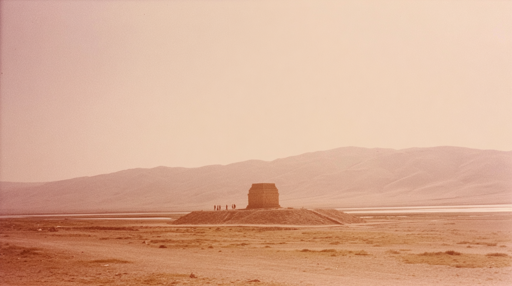

Three monumental guardian statues stand aligned on a raised platform, their immense stone forms set against a wide desert plain and distant mountains under a hazy golden sky.
A massive stone guardian figure stands embedded in the corner of an ancient wall, its weathered surface glowing in warm desert light with mountains stretching across the horizon.
: Two colossal stone guardian figures stand back to back among tall columns, their weathered forms glowing in warm desert light with distant mountains fading into the haze behind them.
A long stone relief panel depicts carved figures, animals, and attendants in procession, the intricate details softened by warm desert light and centuries of erosion.
Close up of engravings on wall in Persepolis, 70's analogue photograph of Persepolis columns. sun-bleached colours, subtle dusty pink and muted ochre tones, soft film grain, heat shimmer distortion, textured details, imperfect composition, 35mm kodachrome,